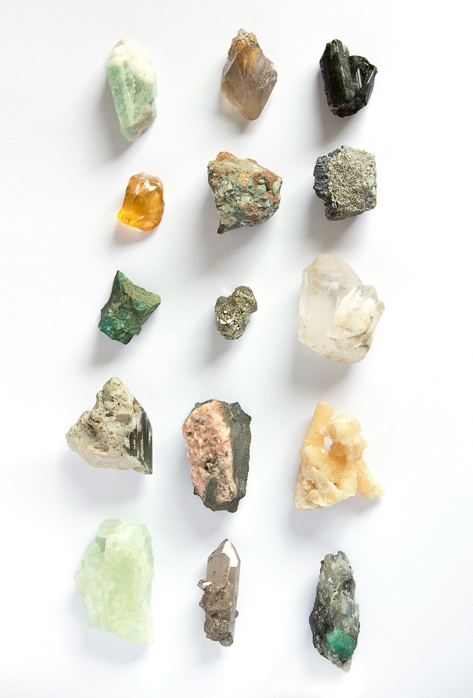
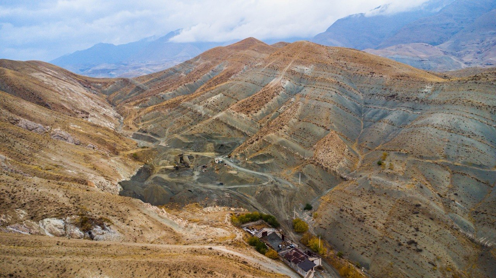
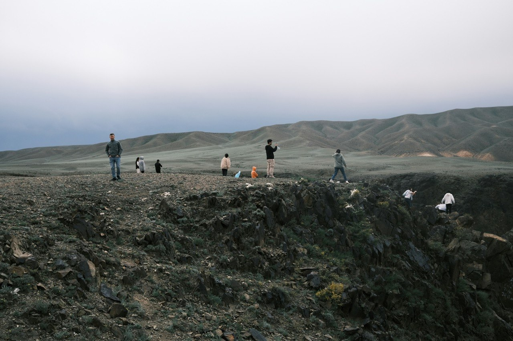

About
The proposed SGA Student Chapter at Cardiff University Kazakhstan brings together students interested in economic geology and mineral deposits. The chapter has applied to the Society for Geology Applied to Mineral Deposits (SGA) and is awaiting approval.
Membership is open to students on geology-related degree programmes at universities in Kazakhstan.

Activities
The proposed chapter plans to organise the following kinds of activity.
Field trips
The chapter plans field trips to outcrops and mineral deposits. The first, a pilot trip to Kokshetau and Burabay, is proposed for May 2027.

Guest lectures
Talks by geologists working in industry and research. Lectures with SLB and KMG are planned for the 2026–27 academic year.
Workshops
Practical sessions on skills used in the minerals industry. A workshop on industry software is planned for January 2027.
Upcoming events
Proposed timeline for 2026–27. All activities are provisional until the chapter is approved.
| Month | Activity |
|---|---|
| October 2026 | SGA Chapter Launch & Icebreaker |
| November 2026 — 1st half | SLB Guest Lecture |
| November 2026 — 2nd half | SGA × SEG × SME Collaboration |
| December 2026 | Online expert webinar / preparation period |
| January 2027 — 2nd half | Practical Industry Software Workshop |
| February 2027 | Online Expert Webinar |
| March 2027 — 1st half | SGA Career Day / Career Night |
| March 2027 — 2nd half | KMG Guest Lecture |
| April 2027 | Field-trip preparation, route and safety planning |
| May 2027 | Pilot Geology Field Trip — Kokshetau & Burabay |
Reports & Field Guides
Event reports
Reports and photos from lectures, workshops and field trips will be posted here after each event.
Field trip guides
Field trip guides produced by the chapter will be published here.
Team
Officers of the proposed chapter.
- Supervisor
- Anton Kutyrev
- President
- Assem Islamova
- Vice-President / Secretary
- Darkhan Tulegenov
- Treasurer
- Akbota Myrzakhan
- Office Manager
- Balaiym Duisenaly
- Event Organiser&Webmaster
- Arsen Kanalinov
Join
If you are studying in a geology-related degree programme at a Kazakhstan university and are interested in joining the proposed SGA Student Chapter, please email us.
Contact
Email:
